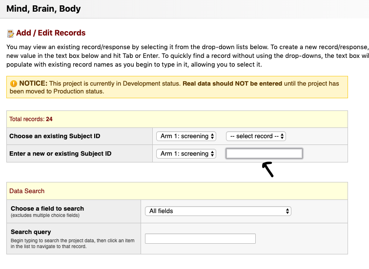
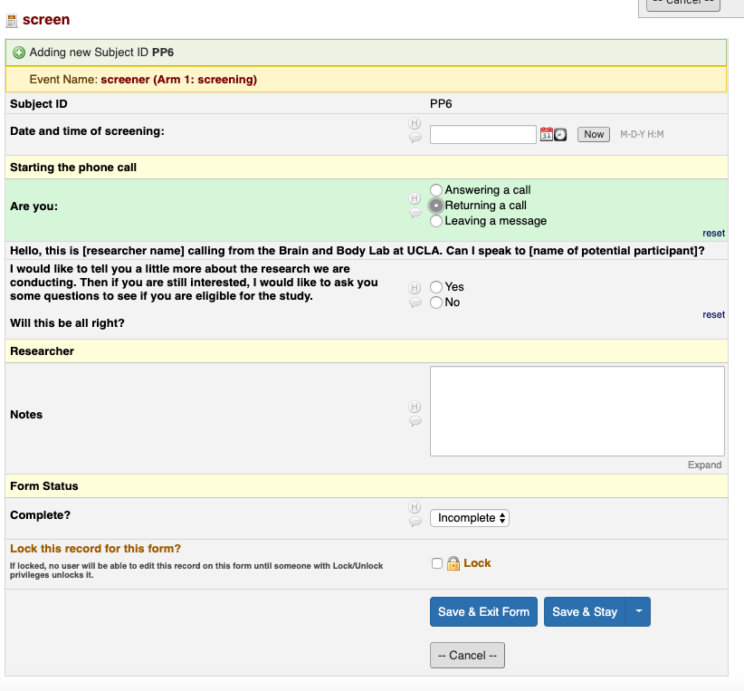
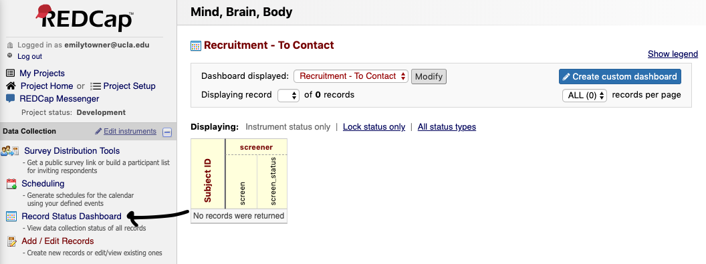
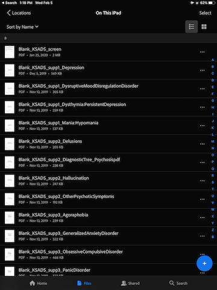
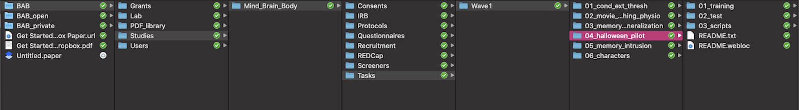
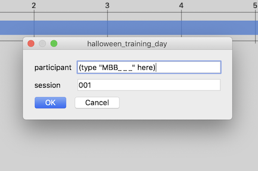

Wave 1
Checklists
Checklist - Initial
Scheduling and Confirmation
- Schedule lab session
- Send confirmation email (in templates)
- Attach Next Steps
Enrollment
- Create participant Box folder using MBB_template (delete blank README from newly created folder)
- Enroll participant in Wave 1 on REDCap
- Fill participant instrument on REDCap
- Fill counterbalance order on REDCap (Checklist - Lab Session Child Instrument)
Calendar
- Create MBB calendar event Lab Session and invite researchers
- Create DBS calendar event DBS Session (SAND calendar or HPL calendar)
- Create MBB calendar event Lab Reminder 1 (email) (1 week prior)
- Create MBB calendar event Lab Reminder 2 (email and call) (3 days prior)
- Create MBB calendar event Home Reminder 1 (email) (1 week after lab session)
- Create MBB calendar event Home Reminder 1 (call) (8 days after lab session)
- Create MBB calendar event Home Reminder 2 (email) (10 days after lab session)
- Create MBB calendar event Home Reminder 3 (email) (14 days after lab session)
Reminders
- Send Lab Reminder 1 email (in templates - attach next steps, consent/assent)
- Send Lab Reminder 2 email (in templates - attach previous and parking info)
- Confirm participant
- Preferably by phone
- Update Lab Session calendar status
Checklist - Pre-Lab-Session
Checklist - Lab-Session Setup - 1 Day Prior
- Create participant manila folder
- Print assent/consent forms (Check IRB expiration)
- Parent consent
- Assent - Child or Teen (None if under 7 years)
- Referral consent
- Contact list
- DBS consent
- Print MBB Lab-Session Checklist-Child (Enter counterbalance order)
- Print MBB Lab-Session Checklist-Parent
- Print KSADS Summary Diagnostic Checklists (Write participant ID on all pages)
- Print and prepare WASI Form (Enter starting point; write participant ID on all pages)
- Print and prepare WIAT Form & Booklet (Enter starting point; Write participant ID on all pages)
- Print Memory Intrusion Scratch Paper
- Print and insert Bristol Stool Scale (MBB Specific Version)
- Print and fill in codes on Participant Info Brochure
- File participant manila folder in front section of file cabinet (Upcoming)
- Charge
- iPads
- iPad pencils
- Biopac transmitters
- VR headset (Check remote battery)
- Audio recorders
- Make sure audio recorder batteries have enough charge
- Label electrodes with color stickers
- Blue=EGG
- Yellow=ECG
- Make participant name tags
- Print Payment Receipt Template
- Assemble home kit (white paper gift bag with BABLab sticker)
- Insert brochure
- Insert gut kit
- Insert toilet hat
- Insert oral kit
- Insert biohazard bag
- Insert Bristol Stool Scale
- Label all items with participant ID and Wave (in sharpie)
- Insert MBB info cards (adopted and bio)
- Attach FedEx slip to mailer
- Label padded mailer with “Exempt human specimen” (in sharpie)
Checklist - Lab-Session Setup - 1 Hour Prior
- Place in Rainbow Room
- Consent/assent/DBS/contact on clipboard with pens
- Consent protocol
- Pleasant Events Checklist and Issues Checklist
- Place WASI & books (2)/WIAT & card/protocol in testing room
- Place audio recorders in testing rooms
- Attach researcher documents to clipboards
- Child - Checklist, Memory Intrusion notes
- Parent - Checklist, KSADS summary
- Turn iPads on airplane mode and WiFi off
- Clear and setup KSADS on iPad (duplicate blanks)
- Photograph FedEx slip
- Pre-load questionnaires on computers
- (Parent and Child; under 8-laminated faces)
- Pre-load physiology data templates (8)
- Move physiology station near Rainbow Room
- Move iPad and iPad stand near Rainbow Room
- Insert Participant Info Brochure in home kit
- Assemble hair sample materials
- Prep blood spot kit
Checklist - Lab-Session
Child
- Assent
- Physiology setup
- Parent-child observation (video record)
- Drink bottle of water
- Memory intrusion (audio record)
- Halloween training
- Characters (monsters/aliens)
- Halloween test
- Discrimination (run 1 of 3) *no physio
- Conditioning (sound)
- Discrimination (run 2 of 3) *no physio
- Height
- Hair sample
- Weight
- Saliva sample
- Memory generalization training (audio record)
- Extinction
- Discrimination (run 3 of 3) *no physio
- Memory generalization test
- Waist circumference
- Snack and water break
- WASI (audio record)
- WIAT (audio record)
- Blood sample
- Questionnaires
- Prize
Parent
- Consent
- Parent-child observation (video record)
- KSADS (audio record)
- Transfer observation video/KSADS audio recording
- Questionnaires
- Parent Proxy and Parent Self
- Home kit issues and explained
- Take photo of Fedex label
- Payment issued and signed
- Take photo of receipt
Checklist - Post-Lab-Session
Clean Up
- Tidy lab
- Disinfectant spray
- Disinfectant wipe
Notes
- Make note in Boxnote (core meeting) of issues to discuss (if needed)
Sample Storage
- Label and leave blood sample to dry
- Store blood sample
- Label and store hair sample
- Label and store saliva sample
- Create and assign Trello reminder to store blood sample
- Update sample storage log on Box (after lab session)
Filing
- File consent and assent forms in filing cabinet (consent manila folder)
- File contact list in filing cabinet (contact list manila folder)
- Log participant payment in reimbursement log book
- File payment receipt photo in Box payment folder
- File FedEx tracking photo in Box folder
Data Entry
- Transfer and rename video recordings to external hard drive (delete originals)
- Transfer and rename audio recordings to external hard drive (delete originals)
- Copy behavioral task data to participant folder (raw)
- Copy physiology task data to participant folder
- Save and upload KSADS screen from iPad to participant Box folder
- Save and upload any KSADS supplements from iPad to participant Box folder
Checklist - Final
Scoring
- Fill out KSADS Summary Diagnostic Checklists
- Score WASI
- Score WIAT
Filing
- Scan DBS consent and file in participant Box folder
- Scan Memory Intrusion Notes and file in participant Box folder
- Scan KSADS Summary Diagnostic Checklist and file in participant Box folder
- Scan lab session checklists (parent & child) and file in participant Box folder
- Scan WASI/WIAT (once scored) and file in participant Box folder
- Make low-res parent-child interaction video and save on BABLab Drive & Box (under secondary ID)
- Copy audio files to Box (under secondary ID)
- Burn all audio and video (low res) files to CD and label/store CD in binder
- Check video transfer and delete original
- Check audio transfers and delete originals
Data Entry - Lab-Session
- Enter contact list information into recruitment database
- Enter KSADS Summary Diagnostic Checklist data to REDCap
- Enter height, weight, waist to REDCap
- Score and enter WASI data to REDCap
- Score and enter WIAT data to REDCap
- Enter Memory Intrusion Notes to REDCap
- Enter lab session checklist - Child data to REDCap
- Enter lab session checklist - Parent data to REDCap
Reminders
- Home Reminder 1 email sent
- Home Reminder 1 phone call made
- Home Reminder 2 email sent
- Home Reminder 3 email sent
Home Session
- Halloween test delay
- Memory Generalization test delay
- Stool kit received
- Bristol Stool Scale data received
- ASA
Data Entry - Home-Session
- Enter home session checklist child data to REDCap
- Download and upload ASA data to participant Box folder
- Scan and upload Bristol Stool Scale to Box
- Enter Bristol Stool Scale data to REDCap
Sample Storage
- Label and store stool sample (add data quality to REDCap)
- Update sample storage log on Box (once all received)
- Upload sample photo to Box
Reimbursement
- Prep report card
- Send thank you email (in templates)
- Attach letter, certificate, and report card
- Mail gift card
- Include thank you letter, certificates, and any additional stool kits if needed
Data Quality
- Data quality check 1
- Data quality check 2
- Data audit
Retention
- Update participant Wave 2 status
Protocols - Pre-Session
Protocol - Recruitment
Pre-Screening
- Check if participant is in Recruitment Database
- If not, add them to the Recruitment Database
- Check if participant is in ID Drive
- If yes, check if they have a Screener ID
- If not, assign them a Screener ID once contact has been established based on the next available Screener ID # in REDCap and proceed with screening
- If yes, proceed with screening under existing Screener ID in REDCap
Screening
- To screen a new participant click “Add / Edit Records”

- Click to enter a new Subject ID
- Make sure Arm 1: Recruitment is selected
- Type “SMBB#” (Screener ID) to create a record and hit “Enter”
- Make sure to link the participants Screener ID and their name on the ID Drive ONLY
- Before creating a new record, be sure to check the ID Drive to see if the participant already has an existing Screener ID
- If a record exists, add a new instance of the screen instead of creating a new record 
- The screening arm contains two parts
- The screen
- The wave1_status
- The wave1_status is to be updated after the first and each subsequent contact

- The wave1_status is to be updated after the first and each subsequent contact
- Click on the radio button in the “screen” row to screen the participant 
- Click “Now” to enter today’s date and time
- Select the appropriate choice to start the phone call and follow the skip logic
- Follow the skip logic to the end
- For items without a text field, write the information down in the Recruitment database (This identifying information cannot be on REDCap)
- Once done, select “Complete” and “Save & Exit Form”
- The screen can be entered multiple times - for instance if there are multiple phone calls or contacts
- It is important to keep a record of all instances of contact

- Click the screen_status radio button

- Select the appropriate option
- Contact - Participant needs to be re-contacted (add Recruitment Database & ID Drive)
- Ineligible - Participant not eligible for study
- To Enroll - Participant to enroll (need to create subject ID, enter subject info, schedule participant, add to Recruitment Database, add to ID Drive)
- Enrolled - Participant has been enrolled (all above have been completed)
- To Remove - Participant wants to be removed
- Be sure to update the screen status after each contact
- After 3 contacts (with no response) - review (time of day, contact method, etc.)
- If enrolled, proceed to pre-session checklist in the participant log
Other Screening Information
Accessing Lists
To find out where participants are in the recruitment process, there are several lists.  1. Click on “Record Status Dashboard” 2. Participants who have been enrolled will be listed in the Enrollment - Wave 1 list 3. Participants in the process of recruitment will be listed in one of the 4 Recruitment lists for the appropriate wave - *These lists are populated based on the individuals “Screen Status” so be sure to update after each contact!
List Types
- Contact - List of individuals who need to be contacted or re-contacted (also includes waitlist)
- Ineligible - Participants are ineligible but interested
- To Enroll - Participants who have been screened and are eligible to enroll
- To Remove - Participants who were not interested in being contacted for this or future research
Addressing Concerns
If a parent has a concern about the study before the session, send the email template:
- [MBB - CONCERNS]
Protocol - Calendar
- Lab session events format
- W1 MBBXXX - Lab Session
- MBBXXX - Sex, Age #, Group
- Status: Scheduled / Confirmed / Completed
- Arrival: X AM
- W1 MBBXXX - Lab Session
- Lab session reminders format
- W1 MBBXXX - Lab Reminder 1 (email)
- Status: Incomplete / Complete
- W1 MBBXXX - Lab Reminder 2 (Email & Call)
- Status: Incomplete / Complete
- W1 MBBXXX - Lab Reminder 1 (email)
- Home session reminders format
- W1 MBBXXX - Home Reminder 1 (Call)
- Status: Incomplete / Complete
- W1 MBBXXX - Home Reminder 1 (Email)
- Status: Incomplete / Complete
- W1 MBBXXX - Home Reminder 2 (Email)
- Status: Incomplete / Complete
- W1 MBBXXX - Home Reminder 3 (Email)
- Status: Incomplete / Complete
- W1 MBBXXX - Home Reminder 1 (Call)
Protocol - Home Kit Assembly
Please refer to the diagram below for the complete list of items in a home kit:
Protocols - Parent
Protocol - Consent & Assent
Once the parent and child/teen come into the lab, seat them in the Rainbow Room on the couch for consenting (parent) and assenting (child aged 7+ or teen).
Make some small talk - Ask the participant how they got here. If they have participated before in research. Offer them a bottle of water. Thank them for coming and for giving up their weekend to help science.
Tell the parent and child that the first thing you are going to do is go over all of the things they will do today, and have them sign the consent and assent forms.
Speak to them and direct them through the whole process.
Things you will do in the lab
- Stick stickers on you to measure heart rate, sweat, stomach muscles.
- Sit with parent and talk about fun things and hard things (filming).
- Parent stays in room and answers more questions.
- Child goes next door to play computer games (look at pictures, watch movies). Some of the movies and pictures will be a little bit scary, others sad, others boring.
- One of the games involves a loud annoying noise, we will adjust it for you.
- You will also do some other games on paper and pencil - like puzzle and word games
- You will answer some questionnaires
- We will also measure your height, weight, and waist circumference.
- We will take three biological samples:
- Hair - stress hormones
- Saliva - microbiome
- Blood - immune - wear goggles
- Do you get sick or dizzy when you see blood or hurt yourself?
- If we need to, can we prick two fingers?
- When you are done with all of that, you will get a big prize, then we will pay you and you will go home.
- You will get $45 for the work you put in today.
Things you will do at home
Child
- Poop sample - microbiome
- Stool scale
- Memory game - to see what you remember from lab.
Parent
- 24 hour food recall
When you complete the poop sample and the games at home, we will pay you another $20 in the form of a giftcard.
Things to know
You are a volunteer, which means that you do not have to do anything, or say anything that makes you uncomfortable. We would like you to try everything you can, and to do your best, but if there are things you absolutely do not want to do, just tell us, that is o.k.
We keep your participation confidential - ID number.
We want you to come in again in the future, so we will ask for some information so we can contact you in the future.
Sign consent/assent forms including DBS form and Contact Sheet
Protocol - Parent/Child Observation
The parent and child will be in the Rainbow Room for 15 minutes. During that time they will be filmed while planning a conflict event, and then again while discussing a pleasant event. The conflict event will always go first, followed by the pleasant event. We did this to ensure that the parents were not thinking of the negative interaction upon answering the questionnaires about their child, which they did immediately after the observation interaction. Participants should complete this activity in English.
Step 1:
Parent and child will be situated on the grey couch in the Rainbow Room. The iPad video camera will be placed about 4 feet away from the dyad, on a tripod stand. The screen of the iPad will be facing away from the parent and child.
Step 2:
The researcher will give the parent and child the Pleasant Events Checklist (PEC) on a piece of paper.
Researcher: Next we are going to take some film of you while you discuss a source of conflict (or something you disagree on) and try to resolve it. On this piece of paper is a list of things that parents and children sometimes have disagreements about. Please take a moment to read the list and think about some that you would like to discuss together. When I knock on the door, please start discussing the things you have selected from the list and try to resolve the areas of conflict you have chosen from the list. You do not need to tell us what you chose to discuss, and it does not matter if you chose something from the list, or decide to choose something else not included on the list. I will give you five minutes to discuss the event, then I will come back and give you further instructions.
Step 3:
Researcher press record on the iPad and leave the room. Start timer for 1 minute, then knock on the door and ask the dyad to begin discussing their event. Start timer for 5 minutes. At the end of 5 minutes, again knock on the door and enter the Rainbow Room.
Researcher: Thank you for taking the time to discuss the source of conflict and try to resolve it. Next we are going to take some film of you while you discuss a pleasant event you could do together. On this piece of paper is a list of events that parents and children sometimes find pleasant to do together. Please take a moment to read the list of events and think about what you would like to plan to do together. When I knock on the door, please start discussing the event you would like to do together and make a plan for how you could do it. You do not need to tell us what you chose to discuss, and it does not matter if you chose something from the list, or decide to choose something else not included on the list. I will give you five minutes to discuss the event, then I will come back and give you further instructions.
Step 4:
Researcher press record on the iPad and leave the room. Start timer for 1 minute, then knock on the door and ask the dyad to begin discussing their event. Start timer for 5 minutes. At the end of 5 minutes, again knock on the door and enter the Rainbow Room.
Step 5:
Researcher reenter the room, switch the iPad off and move the child/adolescent to their next session.
Protocol - KSADS
Audio Recording
- Make a separate recording for each KSADS administered if there is more than one child in one session.
Step-by-step guide on how to use recorder:
Step 1: Press and hold highlighted Power button to turn recorder.
Step 2: Press highlighted button until “TALK” appears on the screen. Now you are on the “Talk” setting.
Step 3: Push highlighted button up to start recording. Push down to stop recording.

Using the iPad for KSADS Summary Checklist
- Before the start of every session, be sure to duplicate and rename all the KSADS documents in Acrobat (25 documents per participant) and rename them (MBBXXX_KSADS_suppX_XXX).
- Note 1: This may take a while, especially if there are more than one participant, so be sure to do it ahead of time.
- Note 2: With multiple participants in one session, keep them all on the same iPad as the same iPad will be used to administer all KSADS.
- Follow instructions below on how to duplicate and rename the documents:
- Turn on iPad and go to the “Acrobat” app.
Your screen should look like this. If it does not, tap on “Files” at the bottom, and ensure that the Locations is set to “On This iPad”.
- For each document, tap the three horizontal dot to the right, and select “Duplicate”.

- The duplicated document should appear right below the original document.
- Tape the three horizontal dot to the right of the duplicated document, and select “Rename”.

- Replace the word “Blank” with the participant ID, and remove the “(1) at the end of the name. For example, if the participant ID is MBB001, the name of the duplicated document should be: MBB001_KSADS_screen
Do the same for all 25 documents (Duplicate, Rename).
Protocol - Questionnaires
Parent Proxy
Parents will complete REDCap questionnaires for each child.
Parent Self
Parents will complete REDCap questionnaires about themselves only once (under eldest child’s [lower number] ID)
Protocol - Home Kit
Explain to the parent what is included in the home kit / home session and how to collect the stool sample.
Protocols - Child/Teen
Protocol - BioPac Electrode Hookup
Electrode Placement/Preparation
- Wheel the cart into the Rainbow Room
- Prep 2 electrodes with Gel 101. Stick to the participant’s ring and middle fingers on their non-dominant hand (we want to keep the pointer finger free so they can use it for tasks)
- Wrap medical tape around these to secure them, but ensure that the metal poles are still accessible
- Look at the skeleton diagram and use the EL-PREP Gel to abrade the skin around the remaining electrode sites (below the collarbones, below the sternum, on the left lower ribs, and in the remaining two positions on the stomach and left ribs)
- Clean the remaining EL-PREP off with a tissue or baby wipe
- Prep 8 electrodes with Gel 100. Stick to the locations indicated on the skeleton diagram
- Let all electrodes sit for the duration of the parent/child observation
GSR
- Put on gloves
- Ensure that the finger electrodes are properly adhered and have had time to rest
- Make sure the lead wire module is connected to the transmitter (PPGED, green sticker) in the “EDA” channel
- Take the transmitter and secure it around the participant’s wrist as shown below
- Hook up the lead wires so that the black wire connects to the middle finger and the red wire connects to the ring finger
- Ask the participant to wear a glove over the whole setup to secure it throughout the tasks
- To check if the GSR is working properly, ask the participant to briefly hold his/her breath - you should see a rise in the signal on the graph
ECG
- Ensure that the chest electrodes are properly adhered and have had time to rest.
- Make sure the lead wire module is connected to the transmitter (RSPEC-R, yellow sticker) in the ECG channel.
- Take the transmitter and secure it around the participant’s stomach as shown below.
- Hook up the lead wires so that the white lead connects to the Right Collarbone electrode, the black lead connects to the Left Collarbone electrode, and the red lead connects to the lowest Left Rib electrode.
EGG
- Ensure that the chest electrodes are properly adhered and have had time to rest.
- Make sure the lead wires are connected to the transmitter (EGG2-R, blue sticker). The lead module labelled “A” (3 short leads) should be in the EGG A channel, while the lead module labelled “B” (2 long leads) should be in the EGG B channel.
- Take the transmitter and secure it around the participant’s stomach as show below.
- Hook up the lead wires so that the “A” and “B” channel white leads connect to the sternum electrodes (which goes to which does not matter), the “A” and “B” channel red leads connects to the upper left rib electrode and stomach electrode, and the “B” channel black lead connects to the remaining lower left rib electrode.
AcqKnowledge
- Turn off the wifi on the Mac Mini and turn on the BioPac/transmitters
- Open AcqKnowledge
- Choose the graph template file
- Once it loads, make sure all of the transmitters are connected
- Press run and click through all of the dialog boxes that are generated
Protocol - Memory Intrusion/Movie Watching
- There are 4 counterbalanced versions of this task:
- DRM_A_incongruent_first.psyexp
- DRM_A_congruent_first.psyexp
- DRM_B_congruent_first.psyexp
- DRM_B_incongruent_first.psyexp
- Choose the counterbalanced version that is correct for the participant
- First open the task, add the participant ID number and press start
Read the instructions to the participant:
Welcome to the movie game. First you will watch some movies. Then you will hear a list of words. Try to remember the words on the list.
Press the space bar to progress to the next screen and read the instructions:
Get ready, to watch the movie. Turn to the laptop to watch.
- Open up the first movie for the participant. It will depend on the counterbalancing condition what movie goes first.
- For the two files that start with “DRM_A”:
- DRM_A_congruent_first.psyexp
- DRM_A_incongruent_first.psyexp
The order will be: Sad –> Neutral –> Scary
- For the two files that start with “DRM_B”:
- DRM_B_congruent_first.psyexp
- DRM_B_incongruent_first.psyexp
The order will be: Scary –> Neutral –> Sad
- Simultaneously press play on the movie on the laptop while also pressing the spacebar on the psychopy task. This will start the physiology and the movie at about the same time. While the movie is playing there will be a box of popcorn on the computer screen.
- When the movie is done, press spacebar on the psychopy computer to progress to the next screen. Read the instructions for the participant:
- Click on the face that shows how you feel after watching the movies.
- Participants can use a mouse to click on the face that matches the way they feel after watching the movie. The faces range in valence (negative to positive) across the X axis, and arousal (low to high) up the Y axis.
After the participant has selected a face, you will be taken to the next screen where you can read the instructions for the participants:
Listen to the list of words and try to remember all of them.
- When the participant indicates that they have understood the instructions, press the spacebar and progress to the next screen. Make sure that the computer volume is up and the participant can hear the words being pronounced on the computer screen. After the participant hears all the words the distractor task will start.
Read the distractor task instructions to the participant:
Count backwards from the number 25 out loud for the researcher.
Note: Whether the participant completes the distractor task correctly or not doesn’t matter. The only purpose of the distractor task is to distract the participant for a brief period of time. Listen while they count backwards. If they can’t count backwards, ask them to count forwards.
- When the participant is finished counting backwards from 25, or after approximately 30s has passed (whatever comes first), progress to the next screen by pressing the spacebar.
Read the instructions out loud to the participant:
Recall 1. Please tell the researcher all the words that you can remember from the list.
- Before the participant starts to tell you what they remember, start a new voice recording and then tell them to start while you record what they say (on the talk setting). Also write what they say on a piece of paper. Make sure to note that this is ‘Recall 1’ (as there is a second recall later on). When the participant has told you all the words they can remember, or after 60s, progress to the next screen (instructions for the next word list).
- Make one recording for all of the memory intrusion task
Read the instructions aloud for the participant.
Now you will hear another word list. Get ready!
Press the spacebar to hear the word list. After the word list, move to the distractor task (counting backwards from 25). After the distractor task, move to the second recall task and record the participant like the first. When the second recall task is complete, a new loop will begin. Read the instructions to the participant then start the next movie (which will always be neutral). Repeat everything again for the final loop after they watch the final movie, which will either be sad or scary.
Protocol - Halloween
- Check master counterbalance sheet and fill out the participant’s ID # in the group which you assigned them.
- Seat the participant at the computer desk in the Bear’s Den. Close the door to ensure privacy and freedom from distractions.
- Set up the task:
- Navigate through the Finder to get to the task following this path: Dropbox/BAB/Studies/Mind_Brain_Body/Tasks/Wave1/04_halloween_pilot 
Start by going into the folder titled “01_training” and selecting “Halloween_training_day1.psyexp” if the participant is in the “day first” group or “Halloween_training_night1.psyexp” if the participant is in the “night first” group.

When the task pulls up and the participant is situated and ready, select the run button indicated below:

- When prompted, fill in the participant’s ID # in the “participant” field: 
- Guide the participant through the instructional slides by pressing the space bar every time [s] shows up on the screen. Make sure to remind the participant to read all of the instructions carefully.
- Once the training task starts, sit quietly and do not disturb the participant. It is important for them to pay their undivided attention to the images on screen during the training.
- When the break slide appears, ask them to let you know when they are ready to continue. Press the space bar to proceed on to the next set of images.
- Once the task is complete, you can exit out by pressing any key and then closing the the PsychoPy file.
- Prompt the testing phase of the exercise by saying something along the lines of: “And now we want to see how much of your trick-or-treating adventure you remember.”
- Go into the “02_test” file and select the “Halloween_day1.psyexp” file if the participant is in the “day first” group or “Halloween_night1.psyexp” if the participant is in the “night first” group.

When the task pulls up and the participant is situated and ready, select the run button indicated below:

- Guide the participant through the instructional slides by pressing the space bar every time [s] shows up on the screen. Make sure to remind the participant to read all of the instructions carefully. Remind them that they need to click the words for the answer they want to provide.
- When the break slide appears, ask them to let you know when they are ready to continue. Press the space bar to proceed on to the next tests.
- Guide the participant through the instructional slides by pressing the space bar every time [s] shows up on the screen. Make sure to remind the participant to read all of the instructions carefully. Remind them that they need to click the item for the answer they want to provide, and then click which quadrant of the scene image they want to pick.
- Once the task is complete, you can exit out by pressing any key and then closing the the PsychoPy file.
Data is saved automatically in the data folder. You do not need to save anything before exiting out of the psychopy folder
Troubleshooting:
If the task exits due to an error, take a screenshot of the error screen and message Emily, Kristen, or Bridget for assistance. Move onto the next task in the meantime.
Protocol - Disc/Cond/Ext
Discrimination
- Click into the discrimination folder
- Right click on either discrimination_horiz.py or discrimination_vert.py (depending on counterbalancing) and open in PsychoPy
- This task was not created in Builder view, so does not have a .psyexp file.
- Click the green running man and enter the Participant ID
- Make sure to enter the correct run number
- Discrimination will be repeated 3 times (run 1, run 2, and run 3)
- Move the keyboard over so that the you, the researcher, can control it
- You will press the buttons for the participant in this task (it is difficult to do and pay attention to on one’s own)
- Read the instructions for the participant
- Ask the participant to tell you which line was more tilted, the first or second and press the corresponding button for them
Conditioning
- Click into the conditioning folder
- Test the sound file on the laptop - screech.ogg
- Set so that the sound is loud and uncomfortable, but not hurting
- Record the volume setting on the session checklist
- Open the .psyexp file for the appropriate counterbalance by right clicking and opening in PsychoPy
- Click the green running man icon and enter the Participant ID
Extinction
- Click into the extinction folder
- Open the .psyexp file
- Click the green running man icon and enter the Participant ID
Protocol - Height
- Place participant directly against wall/frame
- Advise participant to stand up straight
- Make sure heels of participant are up against the wall/frame
- Use a flat object (booklet, ruler, sheet of paper, etc.) to accurately measure height in centimeters
- Record height on Lab Session Checklist
Protocol - Hair Sample
Training video
Set Up Hair Sample Station
- Ensure the hair-sample station is set up accordingly:
- 1 sheet of aluminum foil
- 1 small ziplock bag with participant ID
- 1 salon grade scissor
- 1 wide and narrow tooth parting comb
- 1 alcohol swab
- Painter-tape
- 1 permanent marker
- 1 pair of gloves
- 2 alligator curl clips
- 1 hair claw clip (for long hair)
- Sample hair amount taken from wig
Prior to Getting Hair Sample
- With the parent present in the room, explain to both the child and parent that we will be collecting 30-50 strands of hair. The amount of hair to be collected is less hair than is lost in normal everyday-brushing from the back of the head.
- Inform them how the site for the sampling is hidden by the surrounding hair, therefore not visible after collection.
- Explain how the sample is used to measure a hormone called cortisol that is present in the hair.
- Show the hair sample taken from the wig to illustrate the amount of hair that will be collected (30-50 strands).
- Complete the Hair-Care Practice Questionnaire.
Hair Sample Prep
- Ask the parent to be present in the room when we collect the child’s hair sample.
- Put on a pair of gloves.
- Wipe down the hair scissor/comb/clips with an alcohol swab.
Hair Length
- For short hair (less than 3cm), follow the Short-Hair Protocol below.
- For medium-length hair (3-6cm), follow the Medium-Hair Protocol below.
- For long hair (more than 6cm), follow the Long-Hair Protocol below.
- Ideally, all hair sample should be at least 3cm long. If the hair is less than 1cm long, the sample cannot be used.
Short-Hair Protocol (1-3cm)
- Take the comb and part the hair horizontally between the tips of the ears.
- After parting, ask the participant to hold the parted hair close to the scalp.
- Hold the loose hair tightly with index finger and thumb, and cut the hair along the part.
- Place loose hairs in foil and fold it securely. Do not tape the hair to the foil.
- Fold the foil without bending the hair, and ensure that the hair does not fall out of the foil.
- Label the root-end on the aluminum foil and place it in the ziplock bag.
- Label the ziplock bag with the participant’s ID and Wave.
- Store the sample in a dry area at room temperature (in the plastic folder under the participant IDin cabinet 1).
Medium-Hair Protocol (3-6cm)
- Take the comb and part the hair horizontally between the tips of the ears.
- Take a clip to clip away the hair from the top of the parting.
- Place another clip at the bottom to expose a 5x10cm rectangle of loose hair between the two clips.
- Ask if the child prefers the wide or narrow tooth comb to comb through the loose hair.
- Ask if it is ok to discard any loose hair from the comb.
- Grasp approx. 30-50 strands of hair to the right of the rectangle.
- Gently pull and twist the hair away from the scalp in a rolling motion between the fingers.
- Collect the sample as close to scalp as possible, but be careful to not cut the scalp.
- Attach the hair to the center of the aluminum foil by taping with painter’s tape - do not cover the root end.
- Label the root end on the tape.
- Fold the foil without bending the hair, and ensure that the hair does not fall out of the foil.
- Label the root-end on the aluminum foil and place it in the ziplock bag.
- Label the ziplock bag with the participant’s ID and Wave.
- Store the sample in a dry area at room temperature (in the plastic folder under the participant ID in cabinet 1).
Long-Hair Protocol (>6cm)
- Part the hair left to right at the posterior vertex.
- Clip away any extra hair, then create a twist of hair and hold tightly with index finger and thumb.
- Make a clean cut as close to scalp as possible.
- If the hair is thin, cut 2-3 small areas (1cm apart) across the posterior vertex to conceal the site of the cut.
- Attach the hair to the center of the aluminum foil by taping with painter’s tape - do not cover the root end.
- Label the root end on the tape.
- Fold the foil without bending the hair, and ensure that the hair does not fall out of the foil.
- Label the root-end on the aluminum foil and place it in the ziplock bag.
- Label the ziplock bag with the participant’s ID and Wave.
- Store the sample in a dry area at room temperature (in the plastic folder under the participant ID in cabinet 1).
Protocol - Weight
- Instruct participant to step on weight scale
- Measure weight (in kg)
- Record weight on Lab Session Checklist
Protocol - Saliva Sample
Sample Storage:
- Screw lids on very tight (to prevent evaporation)
- Log the location (grid) on the sample storage log
Protocol - Memory Generalization
Training
- There are two versions of this task (They differ in the pictures that are used for training):
- memory_generalization_beta.psyexp
- memory_generalization_beta_B.psyexp
- Run the task on PsychoPy.
- Read the instructions out loud to the participant.
- When you see “[s]” it means that you can progress to the next screen.
- There will be 60 photographs the participant has to see. They are presented in random order.
- There are 10 red triangles. The participant is asked to press a button when they see the red triangles so that we can later on gauge their attention in the task.
- After the 60 photographs are shown, the participant is asked to recall all of the photos they just saw. Press record on the recorder (on talk setting). Make one recording for the whole memory generalization task.
- They will go through this photo viewing and recall phase another 2 times.
- When the task is complete, save the PsychoPy output file, as well as the recorded responses to the participant folder on the Dropbox.
Test
- Immediately after the memory generalization training, administer the memory generalization test.
- There is only one version of the memory generalization test: memory_test.psyexp
- Read the instructions to the participant, emphasizing that we only want them to respond YES if the picture is EXACTLY the same as the one they just saw in the training task.
- If the participant responds “Yes” or “No” they will progress to a confidence rating screen, asking them how sure they are in their response.
- If the participant responds “I Don’t Know” they will skip the confidence rating screen.
- When the task is complete, save the participants data output from PsychoPy into their participant folder on the server.
Physiology Marks
Markers for physiology have been included for each trial type (object neutral, object negative, scene neutral, scene negative). For the test, physiology markers are entered for every trial. That way, we might be able to go back and look at GSR for the times they got the item correct.
Protocol - Waist Measurement
- Stand and hold tape measure at the participant’s belly button and bring it around their waist, over their t-shirt
- Make sure measuring tape is horizontal around the waist and even in the front and back
- Keep the tape snug around the waist, but not compressing the skin
- Have participant breathe in
- Measure the participant’s waist just after they breathe out (in cm)
Protocol - WASI & WIAT
- Ensure that you have all of the following materials in the testing room:
- WASI Stimulus Book
- WASI Manual
- WASI Score Sheet (should be in participant folder)
- WIAT Word Reading List
- WIAT Math Booklet (should be in participant folder)
- WIAT Score Sheet (should be in participant folder)
- Pens and Pencils
- Recording device
- Sit the child diagonally from you at the table
- Start your recording device (using the talk setting)
- Make one recording for the WASI and one for the WIAT
- Say the following:
“We’re going to be doing a few things today, like playing some word games and answering some math questions. Some of these things might be really easy for you, but some might be hard. Most people do not answer every question correctly or finish every item, but please try your best. Do you have any questions?”
WASI
- Open the WASI Stimulus Book to Vocabulary
Say the following:
“First, I am going to say some words. Tell me what each word means. If there’s one you don’t know, we can skip it. Are you ready?”
For ALL of our participants, we will skip the visual stimuli and go straight to the words (they are all ages 6+). Point to the words and say them aloud to the participant, asking
“What does ____ mean?” or “What is ____?”
- Record answers in the WASI Score Sheet. Score by comparing their response with the Manual’s response criteria. If
- Once the end criteria are met (3 consecutive 0’s) OR the participant hits the max score for their age group (for age 6, item 22; for ages 7-11, item 25; for ages 12-14, after item 28), say:
“Okay, we are going to stop there and move on to the next task.”
- Open the WASI Stimulus Book to Matrix Reasoning
- Say the following:
“Now we’re going to look at some patterns, and I want you to tell me which picture completes the pattern. If there’s one you don’t know, we can skip it.”
- Flip to Sample Item A and ask “Which one of these items here (motion to the bottom row) goes here (motion to the blank space)?” Correct and teach if the participant gets the question wrong.
- Repeat for Sample Item B.
- If the child is 6-8 years old, start at Item 1. If the child is 9+, start at item 4. For each item, ask the same question as above, but do not give feedback or teach if they got the question wrong. Record answers in the WASI Score Sheet.
- Once the end criteria (3 consecutive 0’s) are met OR the participant hits the max score for their age group (for ages 6-8, item 24), say:
“Okay, we are going to stop there and move on to the next task.”
WIAT
- Next, get the WIAT Word Reading List and the WIAT Score Sheet
- Say the following:
“Now you’re going to read some words out loud for me. Please read off of this list left to right, top to bottom just like a book (motion along with the directions as you say them). If you read all of the words on the front, flip over to the back and continue the same way. Go at your own pace, and say the words as clearly as you can. If there’s one you don’t know, we can skip it. Any questions?”
- Hand the word card to the participant and begin recording their answers in the WIAT Score Sheet. Keep track of self-corrections, responses taking longer than 3 seconds, and ask for repeat pronunciations if they are sounding out the word or ambiguous.
- Once the end criteria (4 consecutive 0’s) are met, say:
“Okay, we are going to stop there and move on to the next task.”
- Lastly, get the WIAT Math Booklet
- Ask the participant what grade they are in in school
- Say the following:
“Now, I want you to solve some math problems. Start here (motion to the appropriate item, item 1 for Grade 1, Item 14 for Grades 2-4, Item 18 for Grades 5+) and work left to right, top to bottom. If you get to a problem you don’t know, just skip it. Continue on and let me know when you’re finished. Any questions?”
- When they have indicated they’re complete, take all of their materials and put them back in their folder. Congratulate them and let them know they did well.
Protocol - Blood Sample (DBS)
DBS Prep
- Label Whatman Protein cards with subject ID, date and time, and card number.
- Use cards in the order you have numbered them.
- Check DBS Collection Consent
- Only proceed if no illness, phobia, bleeding disorder, blood thinners taken.
- Experimenter must wash hands.
- Participant must wash hands.
- Use water as hot as participant can stand and interlace fingers and rub together while washing as shown in photo to increase circulation in the hands.
- Prepare collection area. It should look like this:

VR Headset Setup
- Put VR goggles on for participant.
- Ensure the headset has been charged before it needs to be used.
- Bring the headset and the remote to the DBS Collection room.
- Ask the subject if they are familiar with VR headsets, if they make them feel motion sick, and if they want to use the headset during the DBS protocol.
- One of the RA’s should pre-load the BABLab Youtube page:
- Power on the headset (top center button on headset)
- Go to Library
- Select Youtube VR
- Go to the “Account” tab
- Go to the “Liked Videos” tab
- Show the child how the controller works:
- moving your hand acts as the pointer/cursor
- to make selections, use the large bumper button on the back or press down the touchpad at the top of the controller
 Touchpad
Touchpad
 Back bumper
Back bumper
- to scroll, move your finger up and down on the touch pad
- to go back to the movie selection list, press the upper round button below the touchpad
 Back button
Back button
- To put on the headset, loosen the side velcro straps and ask the child to hold the goggles in a comfortable position on their face. If the child wears glasses, they should be fine to use the headset while wearing them.
- Tighten the straps so that the headset stays on its own but isn’t uncomfortable for the child to wear.
- Tell them they can watch any of the videos on the playlist.
- Periodically check in with the child to ensure they aren’t feeling motion sick or uncomfortable in any way.
- After the DBS is completed, take the headset off the child and power it down.
Blood Sample Administration
- Place heating pad on participant’s hand, making sure to cover fingers. Set to low or medium heat.
- Check to make sure it does not get too hot.
- Set timer for 10 minutes.
- When 10 minutes are up, put on gloves. Have participant pull up heating pad and hold it with their free hand on the upper arm. Make sure the heating pad cable is not in the way of collection.
- Clean middle or ring finger with alcohol and wipe with gauze.
- Prick finger pad slightly off-center toward the side closest to the pinky finger and immediately dispose of lancet in sharps container.
- Wipe first drop with gauze then start collecting on Whatman Protein cards in numbered order.
- When finished, wipe with gauze, put pressure to stop bleeding and apply bandage.
- Remove gloves, use hand sanitizer immediately, then wash hands ASAP.
Precautions
- Before, during and after the procedure, ask if the participant is feeling lightheaded.
- Check the participant’s complexion - turning pale is a warning sign for impeding faintness.
- If participant feels faint/lightheaded, terminate the procedure, ask them to bend forward, and place their head between their knees. You may apply a cold compression to the back of the neck to speed up recovery.
- Stay with them for at least 15 minutes until they feel completely fine.
- Report the incident to Bridget.
Fainting Emergency
- In case of fainting or any warning symptoms, lay the participant down flat on a surface on their back and elevate their feet if possible (to a level higher than their heart, about 30cm).
- Loosen any constrictive clothing/belts etc.
- Symptoms usually disappear after a short rest.
- If the participant does not regain consciousness within 1 minute, call 911.
- If the participant regains consciousness, avoid having him/her get up too quickly.
- Have them sit for at least 15 minutes until they feel completely fine.
- Offer water or warm sweet drinks.
- Report the incident to Bridget.
Biohazard Spill Emergency
- Equipments:
- Disinfectant (Sodium Hypochlorite (Bleach))
- Absorbent materials sufficient to completely cover spilled liquid and can be disposed (e.g. paper towels)
- Physical tools that allow safe handling of sharp materials (e.g. tongs, forceps, broom/dustpan)
- Warning signs to notify others that a spill occurred in the area
- Check self for contamination and change PPE if necessary.
- Put on new PPE to proceed with clean up.
- Pick up broken glass/sharps with available physical tools and dispose as biohazardous sharps.
- Place absorbent materials on and around spill.
- Put disinfectant on paper towels and let it sit for at least 5 minutes.
- Dispose of absorbent materials as biohazardous waste.
- Repeat step 4-6 as necessary.
- Remove PPE and wash hands with soap and water.
- Report all spills to Bridget.
Note: Only proceed with biohazardous spill cleanup if you feel comfortable; Always use physical tools for handling sharps.
Incident Response and Reporting
An exposure incident is specific contact with hazardous agents. Exposure incidents at UCLA must be reported, investigated, and documented by UCLA Insurance & Risk Management; Environment, Health & Safety; and/or the supervisor of the facility.
- Notify all personnel in the room of the incident.
- Move exposed individual(s) to a safe location, taking care to not spread biohazardous materials.
- Remove contaminated clothing, turn exposed areas inward, and place in a leak-proof bag or container for future decontamination.
- Wash skin with soap and water for 15 minutes.
- Go directly to the Occupational Health Facility at 67-120 CHS (M-F, 7am-4pm) or the RRMC ER.
- Notify Bridget ASAP.
- Report the incident to EH&S within 8 hours (24-hour hotline: 310-825-9797).
- Record the incident in the Incident and Near Miss Log in the Biosafety Manual.
Note: Keep an extra set of clothes or shoes available to replace contaminated items.
Protocol - Child Questionnaires
- Ask the participant how comfortable they are reading and comprehending in English
- If not fully comfortable, read the questionnaires for the participant
- Read the first questionnaire - the SS - to all participants
Children 8 & Under
- The researcher will need to read all questions to child
- PEDSQL GI & PEDSQL F need the laminated face sheet
Protocols - Post-Session
Protocol - Data Entry
Protocol - Data Quality Check
Protocol - Stool Sample Storage
Training Video
Sample Quality
- Put on gloves.
- Open the mailer to ensure that it contains both the stool sample (in biohazard bag) and the Bristol Stool Scale.
- Check for quality of the stool sample by shaking it up and down vigorously (keep the sample in the biohazard bag), then check for its consistency and color - It should be a dark-brown liquid.
- If stool sample does not meet requirement (e.g. sample is in solid form or amount collected is too little), contact the family to see if they would be willing to send another sample with compensation.
- Contact family if the Bristol Stool Scale is missing in the mailer.
Sample Transfer
- Wear appropriate PPE:
- Gloves
- Lab coat
- Safety glasses
- Surgical Mask
- Closed-toe shoes
- Long pants
- Hair tied back
- Prepare your station and ensure that you have the following:
- Drape
- 2.0mL cryogenic vials
- Stool samples in biohazard bag
- Test tube racks
- Transport box with divider
- Sharpie for labeling
Steps:
- Lay a new drape on the work station and keep all equipments and sample on the drape throughout the transfer process.
- With the stool sample collection vial still in the biohazard bag, shake it up and down vigorously.
- Take the stool sample out of the bag and put it on the test tube rack.
- Untwist two 2.0mL vials and place them on the test tube rack.
- Untwist the stool sample collection vial, and carefully pour the sample into the first 2.0mL vial. (It’s okay if the ball does or does not get transferred)
- Stop pouring when solution reached the 1.8mL line to prevent overflow, and pour the remaining sample (if any) in a second 2.0mL vial.
- Cap the 2.0mL vials tightly to prevent spills.
- Label the 2.0mL vials with a sharpie, ensure it has the participant ID, Wave, and vial number.
- Place the labeled 2.0mL vials in the transport box with divider.
- Close the now-empty stool sample collection vial, put it back in the biohazard bag, and dispose it in the biohazard waste bin.
- Clean up work station, dispose the drape, and wipe down the table top with disinfectant wipe.
- Remove PPE and wash hands with soap and water thoroughly.
- Bring the transport box to C454 where the -80˚C freezer is located (key in BABLab Lock Box).
- Place the 2.0mL vials in their designated space in the freezer box (in accordance to the Sample Storage Log Diagram).
- Log the sample in the Sample Storage Log.
Protocol - DBS Sample Storage
- Using a new drape, place the protein cards along the long horizontal midline of the drape.
- Lightly fold the drape in half along the midline, covering the protein cards but ensure no contact between the drape and the blood spots (i.e. ensure complete exposure of the blood spots).
- Leave the protein cards to dry for 8-24 hours.
- After drying, close the protein cards with the flap (make sure each one is labeled with wave #, participant ID, date and card number), and place each card in a separate ziplock bag with a silica gel pack.
- Place the bags in the BABLab freezer box in the -80˚C freezer in room C454 (key in BABLab lockbox).
Protocol - Report Card Generation
- Open a participant data folder

- Navigate to the report card folder and rename the template file - MBB999 to the relevant participant - and open the file

- If an ASA nutrition report has been generated for this participant, delete page 4 of the pdf. If no ASA nutrition report has been generated, delete page 3 of the pdf.
- Navigate to the last pge of the pdf, and fill in the scores for this participant. You can type directly on the page - it is a fillable form.

- After you have entered the data, it should look like this
- If there are any comments, enter them on the comments page.
For example, if any NA’s are present due to less than 70% of data for that subset being available to calculate a score - note that here. Or, for example if the child was too young to receive a grade based score, you could note the aged based reading of the table here.
If there are no comments, delete this page.

- Important - Once you have completed the edits to the pdf, you must follow these steps to “lock” the data so that it is no longer editable before sending to the participant. To do so, click file/print/PDF/Save as PDF. Save the PDF to your desktop, then replace the original PDF with the desktop version.

- The report card is now ready to be sent to the participant.
Protocol - Data Review & Audit
Follow-Up (completed by Scheduling Coordinator)
- Before sending Home Reminder 3, make sure RA’s have completed Data Entry, Data Quality Check 1, and Data Quality Check 2.
- After sending Home Reminder 3 - create blank Trello card for participant on In Data Review list.
Data Review (completed by Lab Manager #1)
- Once card has been created, do Data Review.
- After completing Data Review, move card to Good Sample, Bad Sample, or No Sample list based on the stool sample.
Data Audit (completed by Lab Manager #2)
If Good Sample:
- Send payment, thank you letter, and certificate via mail.
- Send [MBB - PAID] email and attach thank you letter, certificate, and report card (including outstanding items).
- Move to Paid list.
- One week after payment is sent, check outstanding items do Audit Call #1.
- One week following Audit Call #1, check outstanding items do Audit Call #2.
- Within 2 days, check outstanding items and do Audit Call #3.
- After Audit Call #3 (or all items completed), send [MBB - DONE] email and move to Done list.
- If participant completes item on list, check card on Trello, mark off on participang log and data check sheets, and note in partipant’s README in data folder.
If Bad Sample:
- Send payment, thank you letter, and certificate via mail. Include a new stool sample kit.
- Send [MBB - PAID] email and attach thank you letter, certificate, and report card (including outstanding items - emphasize stool sample kit).
- Move to Paid list in Trello.
- One week after payment is sent, check outstanding items do Audit Call #1.
- One week following Audit Call #1, check outstanding items do Audit Call #2.
- Within 2 days, check outstanding items and do Audit Call #3.
- After Audit Call #3 (or all items completed), send [MBB - DONE] email and move to Done list.
- If participant completes item on list, check card on Trello, mark off on participang log and data check sheets, and note in partipant’s README in data folder.
If No Sample:
- Send [MBB - UNPAID] email and attach thank you letter, certificate, and report card (including outstanding items - emphasize stool sample kit).
- Leave participant on Unpaid list.
- If stool sample recieved - send payment, thank you letter, and certificate via mail and move to Paid list.
- If stool sample not received, one week after email is sent, check outstanding items do Audit Call #1.
- One week following Audit Call #1, check outstanding items do Audit Call #2.
- Within 2 days of Audit Call #2, check outstanding items and do Audit Call #3.
- After Audit Call #3 (or all items completed), send [MBB - DONE] email and move to Done list.
- If participant completes item on list, check card on Trello, mark off on participang log and data check sheets, and note in partipant’s README in data folder.